01
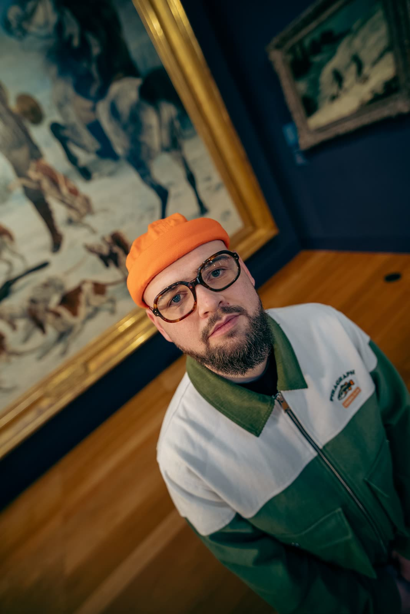
Film de marque
Un film qui capte votre savoir-faire, vos gestes, votre équipe. Pensé pour votre site, vos réseaux et votre communication.
Corporate · film de marque
Industrie, artisans, PME. En Loir-et-Cher, en Vallée de la Loire et partout en France.
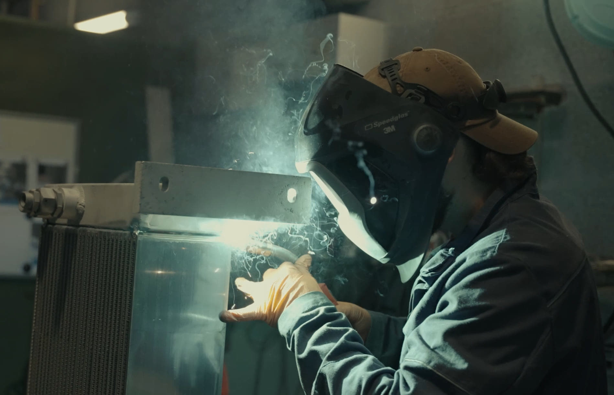
01Le propos
Un film qui part d’un problème réel et qui le règle. Avant de parler d’images, je cherche donc à comprendre. Là où la communication classique explique, le cinéma fait ressentir.
02Reportage photo · atelier de production
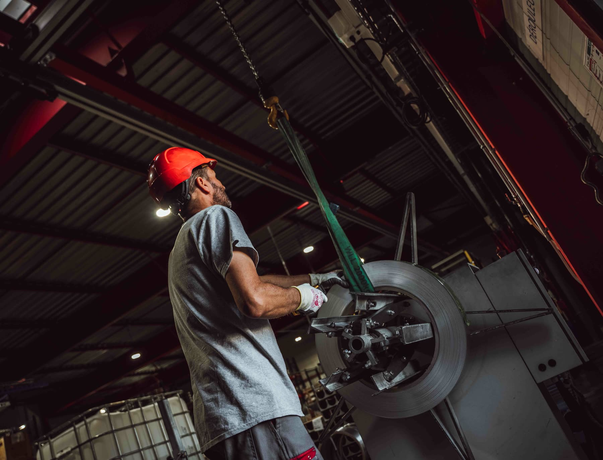
01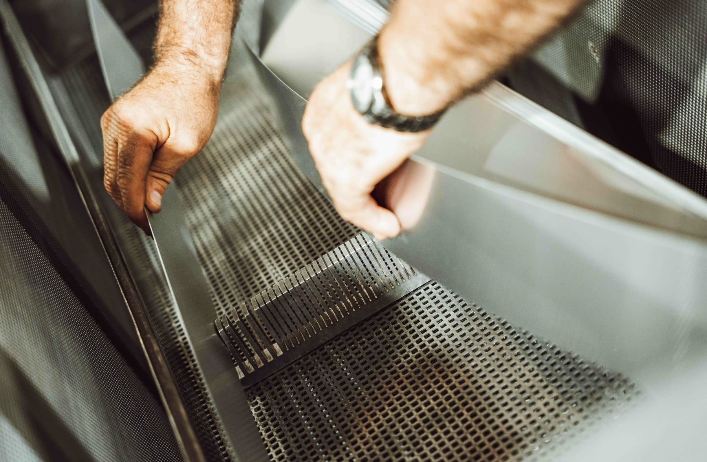
02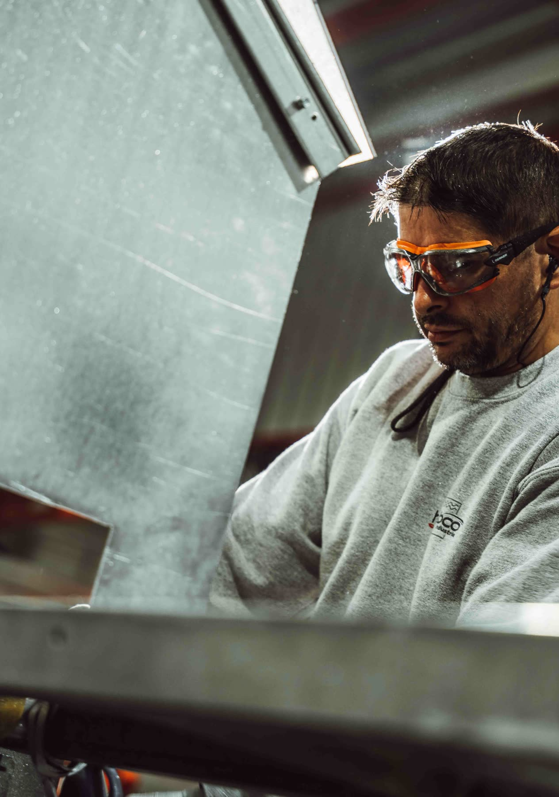
03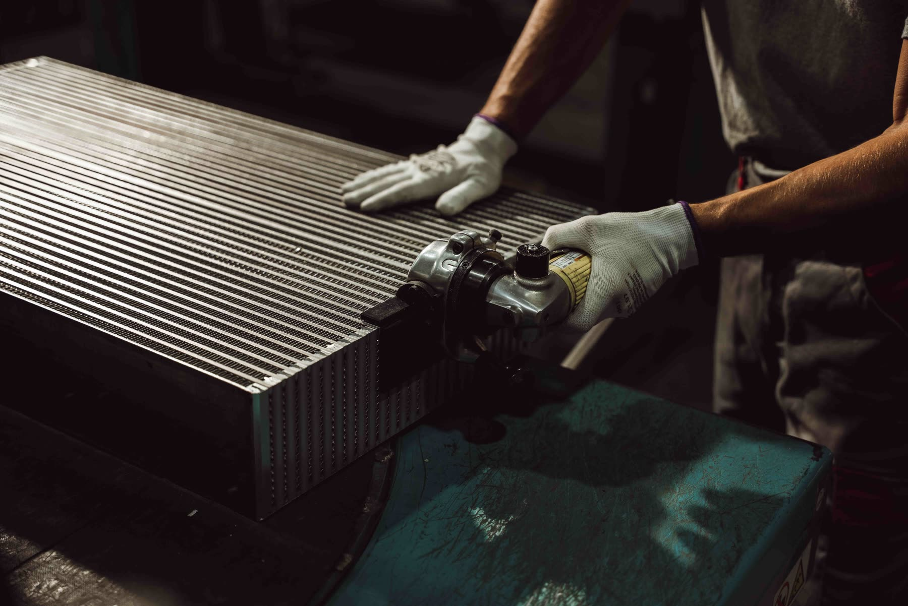
04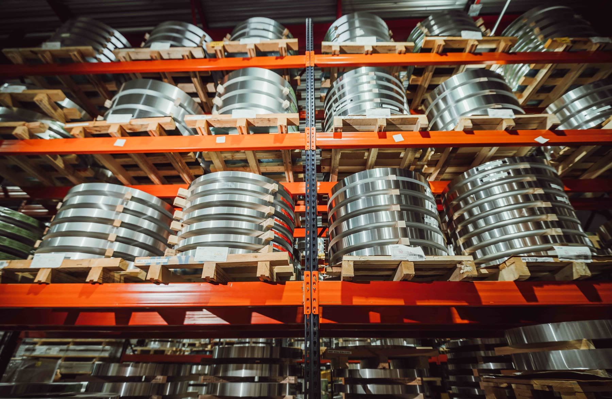
05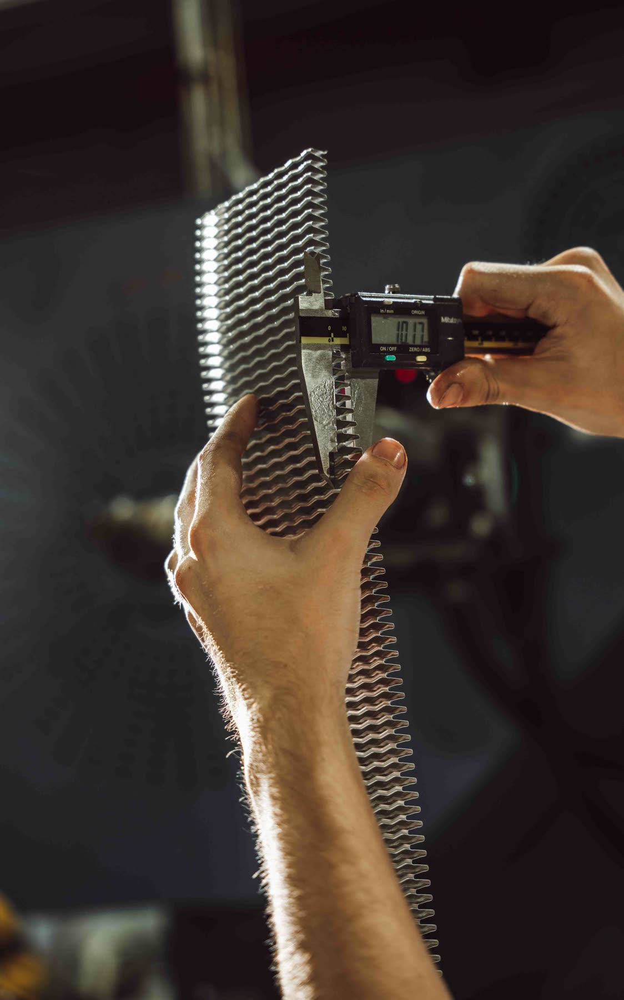
06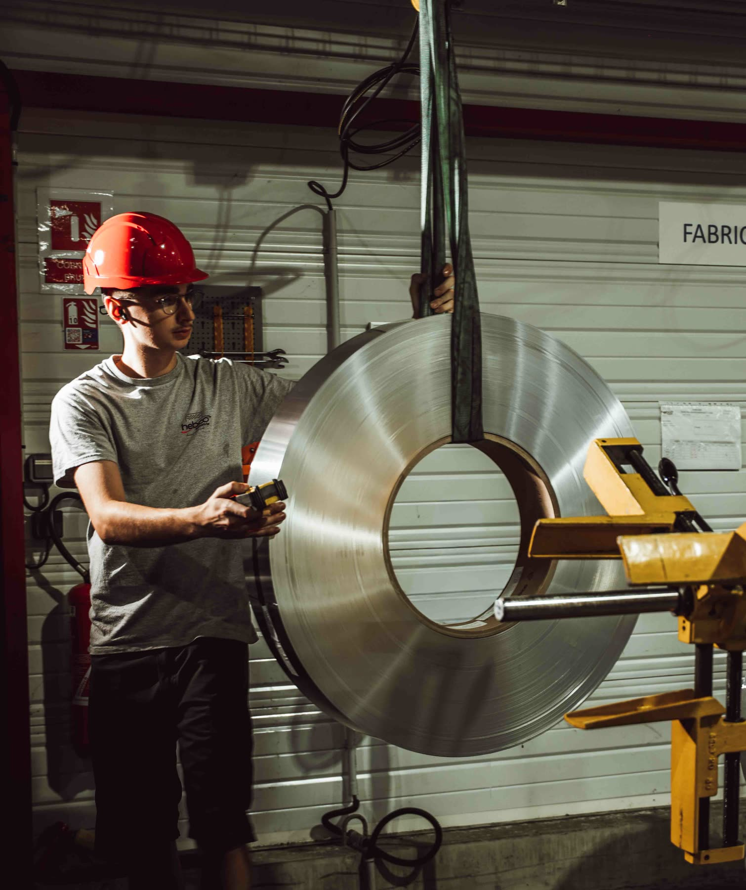
07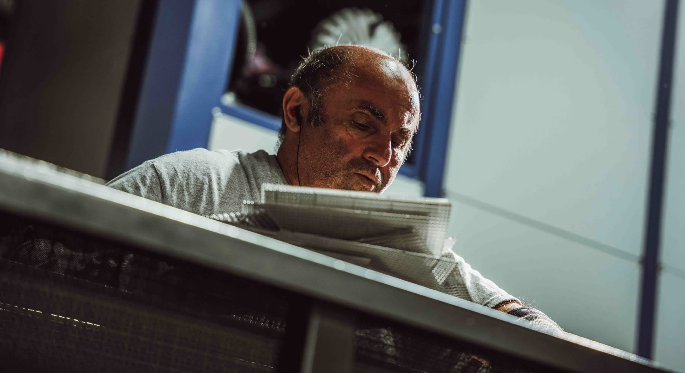
08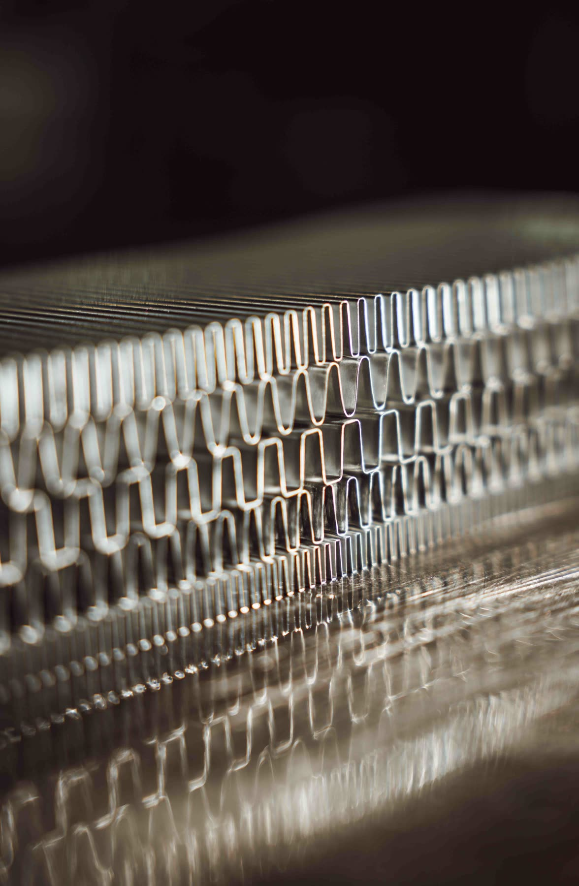
09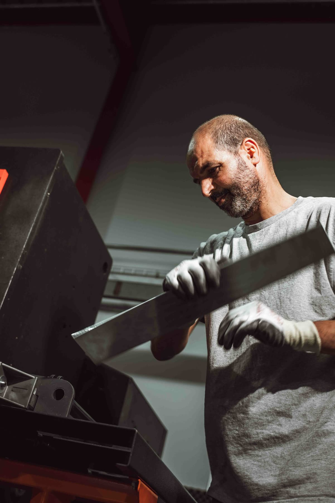
1003En mouvement
04Ce que je filme
L’identité de votre entreprise condensée en un film fort et cohérent.
Dirigeant, artisan, équipe. Un visage et une voix pour votre savoir-faire.
Le geste, le process, la fabrication. Ce que vous faites de mieux, en détail.
Inaugurations, salons, temps forts. Une trace de cinéma de vos moments clés.
Pour les artisans, les maisons d’exception, les PME, l’industrie et les créateurs. Un atelier d’une personne ou une maison établie, l’échelle importe peu. Il faut quelque chose de vrai à filmer.
05Formules
01

Un film qui capte votre savoir-faire, vos gestes, votre équipe. Pensé pour votre site, vos réseaux et votre communication.
02
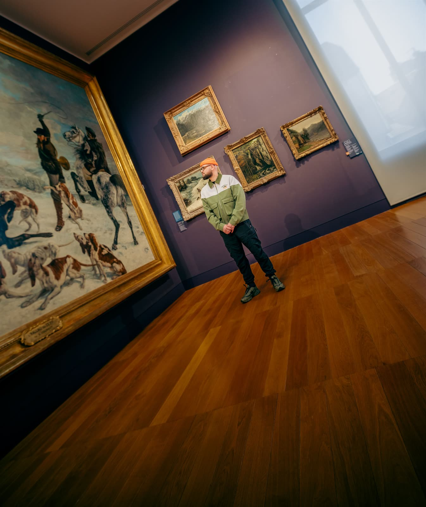
Une série d’images haut de gamme, portraits, savoir-faire, lieux, ambiance. Des photos prêtes à diffuser, fidèles à votre identité.
03
Le film et le reportage réalisés dans la même direction artistique, pour une communication complète et homogène.
Sur devisChaque projet est unique. Le tarif est établi sur devis personnalisé, après un premier échange.
06Le secteur
Je suis installé à Romorantin-Lanthenay. Blois, Orléans et Tours sont à environ une heure de route. Pour un film d’entreprise, cette proximité change la donne. On peut repérer l’atelier avant de tourner, revenir un autre jour, attendre la bonne lumière. Au-delà, partout en France, frais au coût réel.
07Méthode
Pour comprendre votre univers et vos objectifs.
Si nécessaire, avant le tournage.
Guidé de bout en bout, vous n’avez rien à préparer.
La lumière et le rythme de votre film.
Prêts à diffuser sur votre site, vos réseaux, vos présentations.
08Questions
Chaque projet est unique. Le tarif est établi sur devis personnalisé, après un premier échange sur ce que le film doit résoudre, son public et ses écrans de diffusion.
Non. Le tournage est guidé de bout en bout, vous n’avez rien à préparer. Un repérage peut avoir lieu avant, si nécessaire.
Trois formules existent. Le film de marque, le reportage photo, ou les deux réalisés dans la même direction artistique pour une communication homogène.
Depuis Romorantin-Lanthenay, en Loir-et-Cher. Blois, Orléans et Tours sont à environ une heure de route. Partout en France au-delà, avec des frais de déplacement au coût réel.
Des fichiers étalonnés et montés, prêts à diffuser sur votre site, vos réseaux et vos présentations.
09Contact
Vingt minutes pour comprendre ce que le film doit résoudre, sans engagement. Le devis vient après.